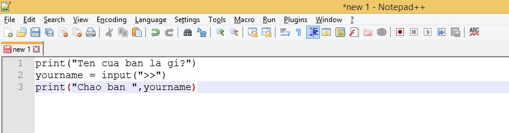
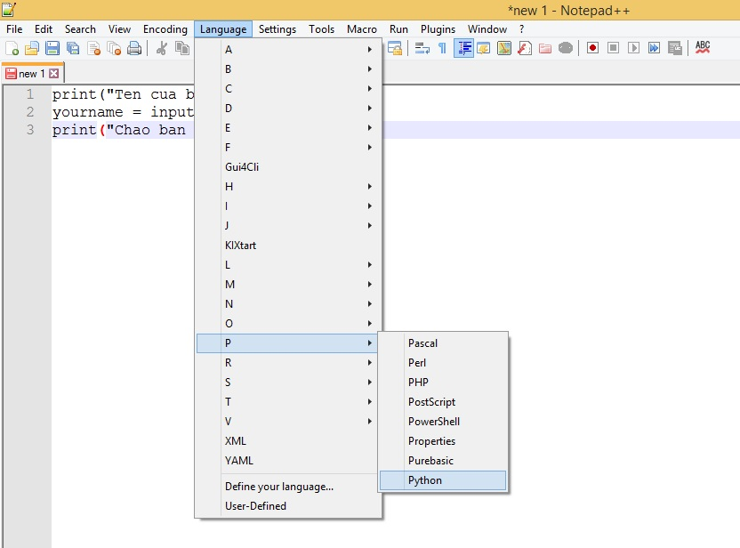
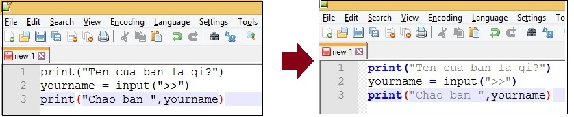
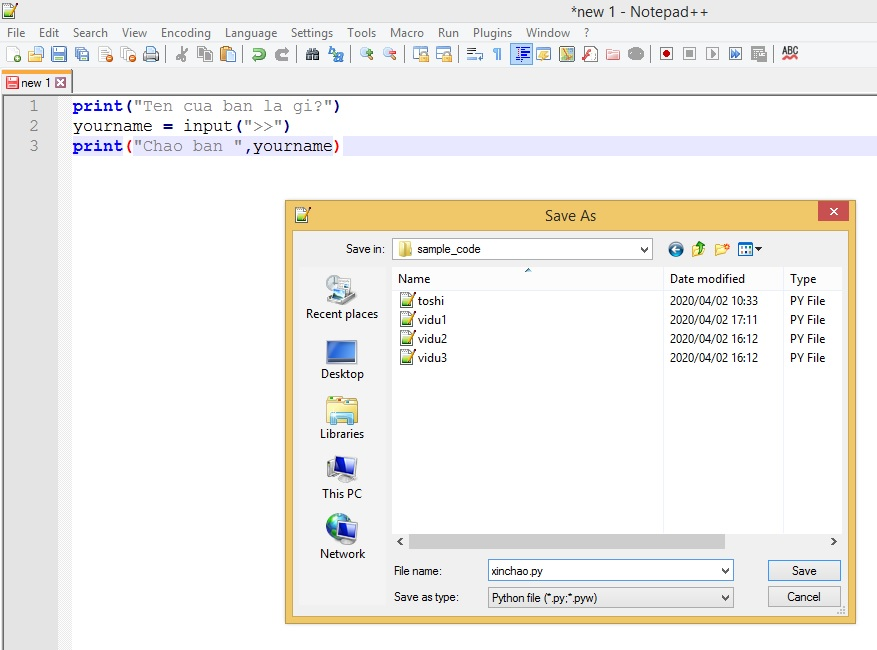
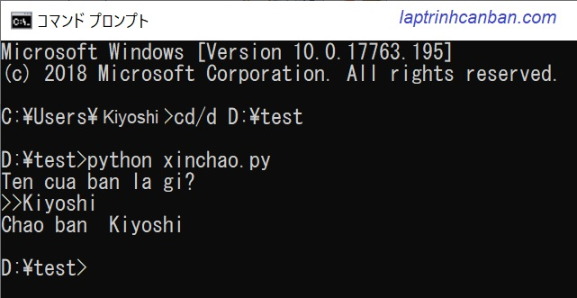
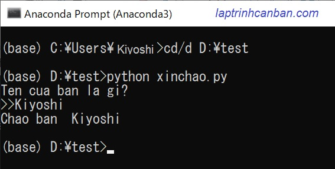

Cùng tìm hiểu cách viết chương trình python. Bạn sẽ biết cách lựa chọn phần mềm viết code python và sử dụng phần mềm đó để viết chương trình python, lưu giữ chương trình đó vào file python và cách chạy code python đã lưu sau bài học này.
Chuẩn bị môi trường viết chương trình python
Cài đặt Python
Trước tiên, bạn cần cài đặt Python trên máy tính của mình. Python có nhiều phiên bản, nhưng phiên bản Python 3 là phiên bản được khuyến nghị sử dụng. Bạn có thể tải Python tại trang chính thức của Python (https://www.python.org/downloads/) và làm theo hướng dẫn cài đặt.
Bạn cũng có thể tham khảo bài viết mà Kiyoshi đã hướng dẫn ở chuyên đề Cài đặt Python.
Môi trường phát triển (IDE)
Sau khi cài đặt Python, bạn cần một môi trường để viết và chạy chương trình. Có nhiều môi trường phát triển tích hợp (IDE) cho Python, chẳng hạn như PyCharm, Visual Studio Code, và IDLE (môi trường mặc định của Python).
Phần mềm viết code python
Để viết chương trình python, chúng ta cần lựa chọn phần mềm viết code python. Chúng ta có thể viết code python bằng hầu hết các phần mềm viết code thông dụng hiện nay như Notepad ++, Sublime Text, hay là Visual Studio - Microsoft. Nếu trong máy không cài những phần mềm này, bạn thậm chí có thể dùng phần mềm viết code python đơn giản nhất, đó chính là Notepad - phần mềm chỉnh sửa văn bản có sẵn trong windows. Kiyoshi thì hay dùng phần mềm Notepadd++ để viết code python , nên trong phạm vi website này mình sẽ hướng dẫn cho các bạn viết code python với phần mềm Notepad ++ nhé.
Bạn có thể download phần mềm này tại https://notepad-plus-plus.org.
Ngoài ra, bạn cũng có thể dùng các chương trình viết code dưới đây:
- Sublime Text : phần mềm viết code python miễn phí, download tại https://www.sublimetext.com/3
- Visual Studio - Microsoft : phần mềm viết code python miễn phí miễn phí, download tại Microsoft visualstudio
- Pycharm : phần mềm viết code python có phí, download tại https://www.jetbrains.com/pycharm-edu/
- Các bạn ở Nhật Bản thì có thể dùng phần mềm viết code python miễn phí Sakura editor , download tại https://sakura-editor.github.io/
Cách viết chương trình python
Hãy bắt đầu viết chương trình Python đầu tiên. Dưới đây là một ví dụ đơn giản, chương trình nhập và in ra tên của bạn trong Python:
print("Ten cua ban la gi?") |
Bạn sẽ viết chương trình python bằng cách soạn thảo trên phần mềm viết code python rồi lưu file python này lại với đuôi file là py. Sau đó bạn có thể chạy chương trình python đã được lưu trong file python này, hoặc chỉnh sửa nó nhiều lần theo ý muốn.
Sau đây chúng ta hãy cùng xem các công đoạn viết chương trình python với phần mềm viết code python Notepad++ nhé.
Khởi động phần mềm viết code python và viết chương trình python.
Trước hết hãy khởi động phần mềm viết code python Notepad ++, sau đó bạn sẽ viết các dòng lệnh của của chương trình trực tiếp vào mà hình của phần mềm này. Ví dụ, chúng ta sẽ nhập các dòng code của một chương trình python đơn giản dưới đây vào màn hình của Notepad ++
print("Ten cua ban la gi?") |
Màn hình Notepad++ sẽ như dưới đây:

Đặt ngôn ngữ lập trình trong phần mềm viết code Notepad ++
Khi bạn viết các dòng code trên vào Notepad ++, thì Notepad ++ vẫn chưa nhận biết được ngôn ngữ lập trình bạn đang sử dụng là python đâu, nên chức năng tự điểu chỉnh màu giúp dễ soạn thảo hơn của Notepad ++ vẫn chưa được kích hoạt. Do đó bạn phải đặt ngôn ngữ lập trình sử dụng trong chương trình là python bằng một trong hai cách dưới đây:
- Cách 1: Click Language > P > Python
- Cách 2: Nhấn tổ hợp phím Alt + L > P > Python

Khi đó, Notepad ++ sẽ tự động đổi màu chữ giúp bạn phân biệt các câu lệnh dễ dàng hơn như hình dưới đây:

Lưu chương trình python
Về mặc định, chương trình python sẽ được viết và lưu giữ lại với một file có đuôi file là .py. Ví dụ như check_id.py hay xinchao.py.
filename.py
Sau khi lưu chương trình với đuôi file py, chúng ta có thể chạy file python đó, hoặc tiến hành sửa chương trình được ghi trong file đó.
Ví dụ như chúng ta sẽ lưu lại file python vừa viết ở trên với tên là xinchao.py. Cách lưu file python trong Notepad ++ như sau:
-Click vào File> Save , sau đó nhập xinchao.py vào hộp Filename.
-Chọn định dạng file là Python file(.py:.pyw) trong hộp Save as type .
-Chọn nơi lưu file bằng cách chọn đường dẫn tại hộp Save in. Trong ví dụ này, giả định bạn lưu file vào folder [D:\test\xinchao.py].
-Cuối cùng nhấn vào Save để hoàn tất lưu file.

Cách chạy chương trình python
Sau khi lưu chương trình vào file python, chúng ta sẽ có nhiều cách khác nhau để chạy code python được lưu trong file đó, điển hình là hai cách như dưới đây:
Chạy python trên cmd
Để chạy file python trên cmd, điều kiện cần thiết là bạn đã khai báo vị trí cài đặt của python trong máy của bạn cho hệ điều hành biết để có thể gọi python trực tiếp từ màn hình cmd, bằng cách cài đặt môi trường python trên hệ điều hành.
Sau khi hoàn tất cài đặt môi trường python lên hệ điều hành, bạn có thể chạy file python trên cmd như sau:
Giả sử bạn cần chạy file xinchao.py ở trên có đường dẫn D:¥test¥xinchao.py.
Khởi động DOS hoặc Power Shell. Khi đó màn hình cmd hiện ra với thư mục làm việc như sau:
C:¥Users¥Kiyoshi>
Chuyển thư mục làm việc sang thư mục chứa file python cần chạy bằng lệnh
cd/d folder_pathcd/d D:¥test
Chạy file python đó bằng lệnh
python xinchao.pypython xinchao.py
Khi đó file python được xử lý, và kết quả chương trình python được viết trong đó hiện ra như màn hình dưới đây:

Chạy python trên Anaconda Prompt
Cách file python trên anaconda prompt cũng tương tự như với cách chúng ta chạy file python trên cmd. Chúng ta cũng sử dụng các lệnh chuyển thư mục làm việc tới thư mục chứa file python cần chạy, và sau đó chạy file python.
Điểm khác biệt là thay vì nhập lệnh trên màn hình cmd, chúng ta khởi động Anaconda Prompt và chạy lệnh trực tiếp trên màn hình này.
cd/d D:¥test |
Khi đó file python được xử lý, và kết quả chương trình python được viết trong đó hiện ra như màn hình dưới đây:

Tóm lại để chạy được một file python, bạn cần phải làm hai việc sau:
- Di chuyển tới folder chứa file python với cú pháp
cd/d folder_path - Chạy file python đó với cú pháp
python filename.py
Tổng kết
Trên đây Kiyoshi đã hướng dẫn bạn cách viết chương trình python, lưu giữ và chạy chương trình python rồi. Viết chương trình Python là một hành trình thú vị và đầy tri thức. Bắt đầu bằng việc cài đặt Python, tìm hiểu về cú pháp cơ bản, và thực hành bằng cách viết các dự án thực tế. Python là một ngôn ngữ lập trình đa dụng, và việc học nó có thể mở ra nhiều cơ hội cho bạn trong lĩnh vực phát triển phần mềm.
URL Link
HOME › python cơ bản - lập trình python cho người mới bắt đầu>>03. kiến thức căn bản về chuơng trình python